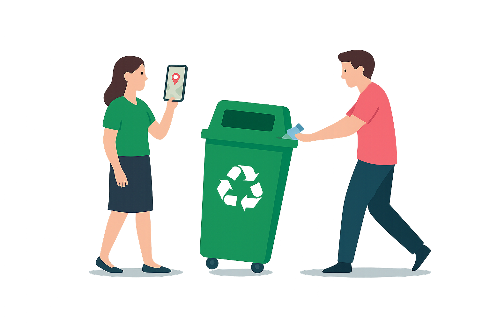

📍 Plaza Central
Dirección: Av. Libertad y San Martín
Horario: Lunes a viernes de 9 a 18 hs
Recibe: Plásticos, papel, cartón, vidrio
Conocé cómo separar y entregar tus reciclables. Ayudá al planeta desde tu casa.
Ver mapa de reciclaje Conocé los materiales reciclables y cómo prepararlos correctamente para su recolección.
Lavalo y aplastalo para reducir el volumen.
Evitá papeles sucios o con grasa.
Seco, limpio y doblado.
Entero, sin tapas ni etiquetas si es posible.
Enjuagá latas y compactalas si podés.
Dirección: Av. Libertad y San Martín
Horario: Lunes a viernes de 9 a 18 hs
Recibe: Plásticos, papel, cartón, vidrio
Dirección: Calle Belgrano 1234
Horario: Lunes a sábado de 8 a 20 hs
Recibe: Papel, cartón
Una iniciativa para enseñar a estudiantes de nivel primario cómo separar residuos y reutilizar materiales.
Charlas, juegos y stands informativos sobre reciclaje, compostaje y consumo responsable.
Se habilitan nuevos puntos verdes para dejar pilas, celulares y electrodomésticos en desuso.
Área responsable: Dirección de Medio Ambiente
Correo electrónico: medioambiente@ciudadverde.gob.ar
Teléfono: (0299) 456-7890
Dirección: Av. Mitre 123 - Ciudad de Cutral Có
Ciudad Verde es un programa municipal que promueve la separación de residuos, la educación ambiental y el acceso de los vecinos a recursos de reciclaje. A través de Puntos Verdes, talleres y recolección domiciliaria, buscamos una ciudad más limpia y comprometida con el futuro del planeta.